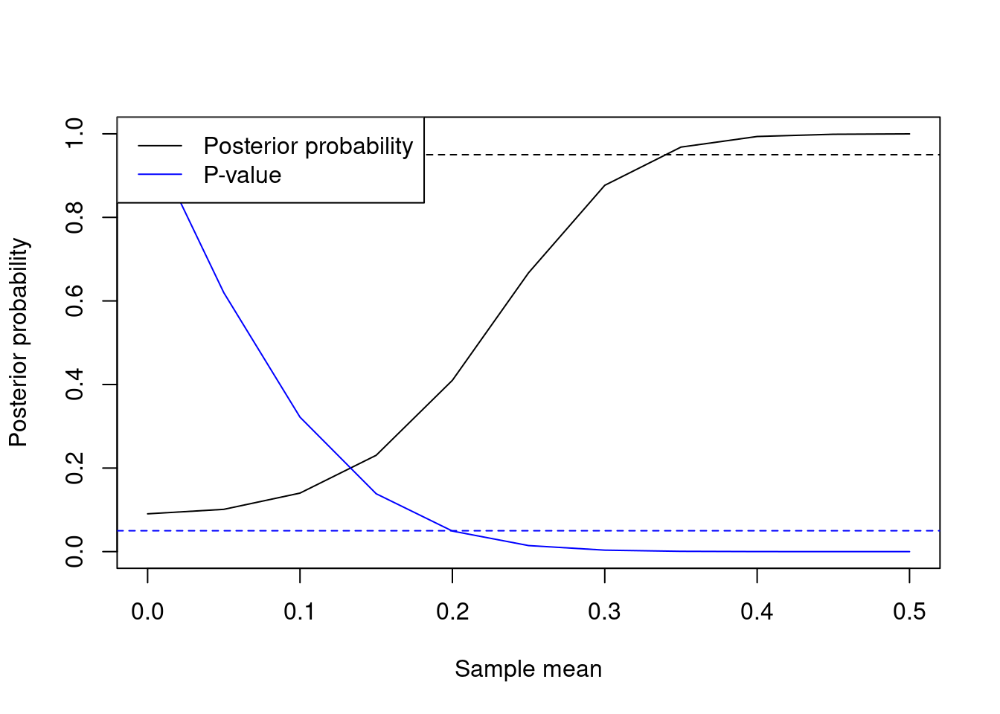
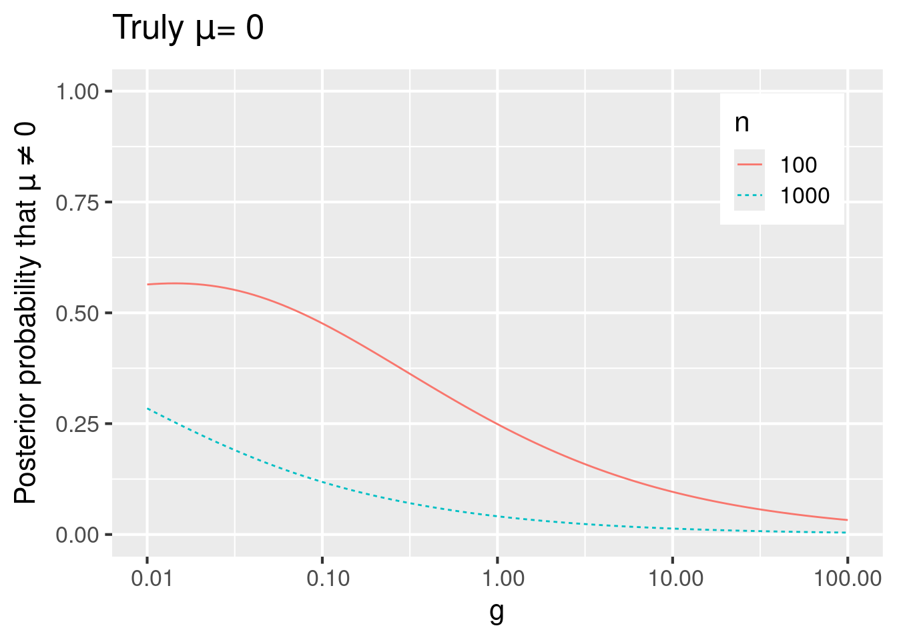
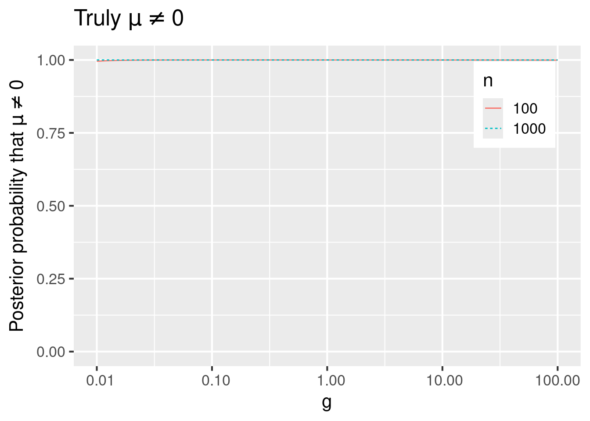
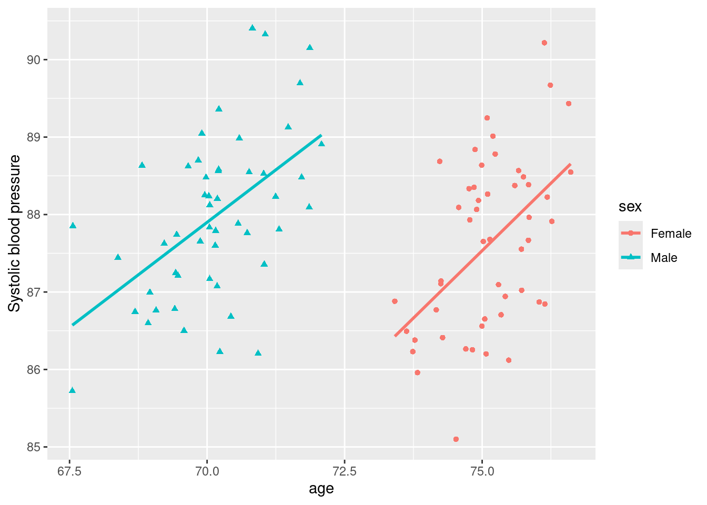

2 Bayesian model selection and averaging
This chapter provides an introduction to the foundations of Bayesian model selection and averaging, providing simple illustrations throughout and practical thoughts. We use the term Bayesian model selection (BMS) for the prototypical setting where one considers multiple hypotheses or models and wishes to obtain posterior model probabilities for each model. For example, in regression each model may be associated to what covariates are included in the regression equation (i.e. have non-zero coefficients), in graphical models each model may be associated to what edges are present, and in mixtures each model may correspond to a number of mixture components (clusters).
Section 2.1 illustrates the basic BMS notions by testing whether a Gaussian mean is zero. Section 2.2 discusses the general BMS framework, Section 2.3 discusses BMA for parameter estimation (point estimates, posterior intervals). Sections 2.1-2.3 are intended for readers who are unfamiliar with BMS and BMA. Section 2.4 discusses practical issues to consider if one uses BMA for forecasting. These issues are important and, despite basic, are not sufficiently well-known in our experience. Sections 2.5 and 2.6 discuss slightly more nuanced details on how to set prior distributions, some reasonable defaults and how to induce sparsity in high dimensional problems using either sparse model priors or non-local parameter priors. Finally, Section 3 outlines some key ideas behind computational aspects of BMS. Before proceeding, we load R packages needed by our examples.
2.1 A simplest example
Example 2.1 Let \(y_i \sim N(\mu, \sigma^2)\) independently for \(i=1,\ldots,n\) and consider the two models (or hypotheses) \[\begin{align*} &\mu = 0 \\ &\mu \neq 0. \end{align*}\] As explained in Section 2.2, in this book we denote models by \(\gamma\). In this case we use \(\gamma=0\) to denote the null model \(\mu=0\) and \(\gamma=1\) to denote the alternative model \(\mu \neq 0\).
The goal is to obtain the posterior probability of the alternative \(P(\mu \neq 0 \mid \mathbf{y})\), or equivalently \(P(\gamma=1 \mid \mathbf{y})\), where \(\mathbf{y}= (y_1,\ldots,y_n)\) are the observed data. We may also want to obtain a BMA estimate \(E(\mu \mid \mathbf{y})=\) \[E(\mu \mid \gamma=0, \mathbf{y}) P(\gamma=0 \mid \mathbf{y}) + E(\mu \mid \gamma=1, \mathbf{y}) P(\gamma=1 \mid \mathbf{y})= E(\mu \mid \gamma=1, \mathbf{y}) P(\gamma=1 \mid \mathbf{y}),\] since \(E(\mu \mid \gamma=0, \mathbf{y})=0\), and a 0.95 posterior interval for \(\mu\), that is an interval \([u_1,u_2]\) such that \(P(\mu \in [u_1,u_2] \mid \mathbf{y})= 0.95\).
To perform a Bayesian analysis, one must specify a prior distribution on everything that is unknown. In our context:
We don’t know which model is the correct one. We hence need to specify prior model probabilities, e.g. \(P(\gamma=0)\) and \(P(\gamma=1)\) in this example.
Even if we knew the model, we don’t know the value of its parameters. We hence need to specify a prior on the parameters of each model. In this example, we must set prior densities \(p(\sigma^2 \mid \gamma=0)\) and \(p(\mu, \sigma^2 \mid \gamma=1)\).
In simple settings with two models it is customary to set a uniform model prior. That is, equal prior model probabilities \(P(\gamma=0)= P(\gamma=1)= 1/2\), unless one has strong reasons for doing otherwise (e.g. data from a related past experiment). In Section 2.5 we discuss how to set the model prior in more advanced settings.
For the prior on parameters, both models feature the error variance. A popular choice is setting an inverse gamma prior \(\sigma^2 \sim IG(a/2,l/2)\) under both models, for some given \(a,l>0\). Typically posterior probabilities are robust to the choice of \((a,l)\), provided they’re small values (by default, modelSelection sets \(a=l=0.01\)).
To complete the parameter prior under the alternative model we must set a prior on \(\mu\) given \(\sigma^2\). A popular choice is \(p(\mu \mid \sigma^2, \gamma=1)= N(\mu; 0, g \sigma^2)\), for some given \(g>0\). Posterior probabilities are sensitive to \(g\), but a common default (unit information prior) is \(g=1\) and results are typically fairly robust as long as \(g\) is not too different from this default.
In Section 2.6.1 we extend the example to consider a wide range of \(g\) values.
See also Section 2.6 for some discussion on parameter priors in more advanced examples.
Let us work out Example 2.1 in R. We simulate a dataset where \(\mu=0\), set a uniform model prior and a Gaussian prior on \(\mu\) with normalidprior setting the default \(g=1\) (corresponding to argument taustd).
Importantly, we set the argument center=FALSE because otherwise modelSelection centers \(\mathbf{y}\) by subtracting its sample mean and, while this is conventional in regression where there is little interest in the intercept, in this example it would be inappropriate (the centered \(\mathbf{y}\) has mean 0 by definition!).
We obtain a high posterior probability \(P(\gamma = 0 \mid \mathbf{y})\), hence there isn’t Bayesian evidence that \(\mu \neq 0\).
We remark that for a sample size of \(n=100\) and a single parameter being tested (\(\mu\)), one might expect to get more conclusive evidence in favor of the null. This issue can be addressed by setting a non-local prior on \(\mu\), please see Section 2.6.
We use coef to obtain the BMA estimates and 0.95 intervals for \(\mu\) (row Intercept in the output below) and \(\sigma^2\) (row phi).
For comparison, a t-test also doesn’t lead to rejecting the null model.
Code
## modelid family pp
## 1 normal 0.7510781
## 2 1 normal 0.2489219## estimate 2.5% 97.5% margpp
## (Intercept) -0.03949096 -0.2848408 0.000000 0.2489219
## phi 1.03658377 0.7882084 1.365121 1.0000000##
## One Sample t-test
##
## data: y
## t = -1.5607, df = 99, p-value = 0.1218
## alternative hypothesis: true mean is not equal to 0
## 95 percent confidence interval:
## -0.35605755 0.04253406
## sample estimates:
## mean of x
## -0.1567617We next plot how the posterior probability and the t-test P-value change when the sample mean ranges from \(0, 0.05, 0.1, \ldots, 0.5\). Figure 2.1 shows the results. As the sample mean of \(\mathbf{y}\) grows, we obtain overwhelming evidence for \(\mu \neq 0\). Note that the Bayesian framework is more conservative, in that one obtains a P-value < 0.05 for smaller before one obtains \(p(M_2 \mid \mathbf{y}) > 0.95\). This conservative character of Bayes factors is well-known, and it is one of the reasons why BMS induces sparsity in high-dimensional problems. One may obtain even more conservative results by setting certain model and parameter priors, as discussed in the next sections.
Code
y0 <- y - mean(y)
mu <- seq(0, .5, by=.05)
pp.yplus <- pval.yplus <- double(length(mu))
for (i in 1:length(mu)) {
dfplus <- transform(df, yplus= y0 + mu[i])
ms <- modelSelection(yplus ~ 1, data=dfplus, priorCoef=priorCoef, priorModel=priorModel, center=FALSE, verbose=FALSE)
pp.yplus[i] <- coef(ms)['(Intercept)', 'margpp']
pval.yplus[i] <- t.test(dfplus$yplus)$p.value
}Code

Figure 2.1: Normal mean example (n=100). Posterior probability \(P(\mu \neq 0 \mid \mathbf{y})\) and t-test P-value as a function of the sample mean. The dotted lines indicate standard 0.95 and 0.05 thresholds for posterior probabilities and P-values respectively.
2.2 Bayesian model selection
Consider a fully general setting where one considers a set of models \(\Gamma\). We denote individual models by \(\gamma \in \Gamma\), and the parameters of that model by \(\boldsymbol{\theta}_\gamma\). This is without loss of generality, if one has \(K\) arbitrary models then one could simply set \(\gamma \in \{1, \ldots, K\}\), and the parameters could be an infinite-dimensional object such as a density function.
In regression settings it is convenient to relate \(\gamma\) to the non-zero parameters, as done in Example 2.1, where we had \(\gamma= \mbox{I}(\mu \neq 0)\) and \(\mbox{I}()\) is the indicator function.
Example 2.2 Consider a linear regression \[\begin{align*} y_i = \sum_{j=1}^p \beta_j x_{ij} + \epsilon_i \end{align*}\] where \(\epsilon_i \sim N(0, \sigma^2)\) independently across \(i=1,\ldots,n\). Suppose that we wish to consider the \(2^p\) models arising from excluding/including each of the \(p\) covariates. To this end, let \(\gamma_j= \mbox{I}(\beta_j \neq 0)\) be an inclusion indicator for variable \(j=1,\ldots,p\). Then we can denote an arbitrary model by \(\boldsymbol{\gamma}= (\gamma_1, \ldots,\gamma_p)\), the model space is \(\Gamma= \{0,1\}^p\), and \(\boldsymbol{\theta}_\gamma= (\boldsymbol{\beta}_\gamma, \sigma^2)\), where \(\boldsymbol{\beta}_\gamma= \{ \beta_j : \gamma_j = 1 \}\) are the non-zero regression parameters under \(\boldsymbol{\gamma}\). In such settings we use bold face notation \(\boldsymbol{\gamma}\) to stress that it is a vector.
For illustration suppose that \(p=2\), giving 4 possible models. A primary output of a BMS procedure are posterior probabilities \(p(\boldsymbol{\gamma} \mid \mathbf{y})\) for each model \(\boldsymbol{\gamma}\). We defer discussion on how these are computed until after this example, and show what that output might look like.
| \(\gamma_1\) | \(\gamma_2\) | \(P(\boldsymbol{\gamma} \mid \mathbf{y})\) |
|---|---|---|
| 0 | 0 | 0.01 |
| 0 | 1 | 0.01 |
| 1 | 0 | 0.39 |
| 1 | 1 | 0.59 |
In this example, the most probable model in light of the data includes both covariates, and its posterior probability is \(P(\gamma_1=1, \gamma_2=1 \mid \mathbf{y})= 0.59\). This probability is however not overwhelmingly large, and in particular the model that only includes the first covariate has a non-negligible probability \(P(\gamma_1=1, \gamma_2=0 \mid \mathbf{y})= 0.39\). These probabilities reflect uncertainty (in the Bayesian sense) about model choice.
Another primary output of interest are marginal posterior inclusion probabilities for each covariate, as follows: \[\begin{align*} &P(\gamma_1=1 \mid \mathbf{y})= 0.39 + 0.59= 0.98. \\ &P(\gamma_2=1 \mid \mathbf{y})= 0.01 + 0.59= 0.6. \end{align*}\] These probabilities reflect that there’s strong evidence for including the first covariate, whereas the evidence for including the second covariate is substantial but less overwhelming.
Given a prior model probability \(p(\gamma)\) and a prior on parameters \(p(\boldsymbol{\theta}_\gamma \mid \gamma)\) for every \(\gamma\), Bayes formula gives posterior model probabilities \[\begin{align} p(\gamma \mid \mathbf{y})= \frac{p(\mathbf{y} \mid \gamma) p(\gamma)}{\sum_{\gamma'} p(\mathbf{y} \mid \gamma') p(\gamma')} \tag{2.1} \end{align}\] where \(p(\gamma)\) is the prior probability of model \(\gamma\) and \[\begin{align} p(\mathbf{y} \mid \gamma)= \int p(\mathbf{y} \mid \boldsymbol{\theta}_\gamma, \gamma) p(\boldsymbol{\theta}_\gamma \mid \gamma) d\boldsymbol{\theta}_\gamma \tag{2.2} \end{align}\] is the so-called integrated (or marginal) likelihood. In (2.2), \(p(\mathbf{y} \mid \boldsymbol{\theta}_\gamma, \gamma)\) is the likelihood function for model \(\gamma\). For simplicity, Equation (2.2) assumes the standard setting where \(\boldsymbol{\theta}_\gamma\) follows a continuous distribution, but it can be directly extended to cases where \(\boldsymbol{\theta}_\gamma\) is discrete (then the integral becomes a sum) or a mixture of discrete and continuous distribution (then it’s an integral with respect to a suitable dominating measure).
Intuitively,(2.2) says that if model \(\gamma\) has a large prior probability \(p(\gamma)\) and a large average value of its likelihood function (with respect to the specified prior), then it has high posterior probability \(p(\gamma \mid \mathbf{y})\).
A related quantity are the so-called Bayes factors between models any pair of models \(\gamma\) and \(\gamma'\), \[\begin{align} B_{\gamma \gamma'}= \frac{p(\mathbf{y} \mid \gamma)}{p(\mathbf{y} \mid \gamma')}. \tag{2.3} \end{align}\] Posterior model probabilities in (2.1) are one-to-one functions of Bayes factors and prior model probability ratios, namely \[\begin{align*} &p(\gamma \mid \mathbf{y})= \left( 1 + \sum_{\gamma' \neq \gamma} B_{\gamma' \gamma} \frac{p(\gamma')}{p(\gamma)} \right)^{-1} \\ &\frac{p(\gamma \mid \mathbf{y})}{p(\gamma' \mid \mathbf{y})}= B_{\gamma \gamma'} \frac{p(\gamma)}{p(\gamma')}. \end{align*}\]
2.3 Bayesian model averaging
As we just discussed, BMS quantifies uncertainty in model choice via posterior model probabilities. Bayesian model averaging (BMA) is a conceptually simple and natural way to account for this uncertainty when one wishes to estimate parameters or some other quantity that’s shared by multiple models, and to provide posterior intervals for said parameters. See Clyde (1999) or Hoeting et al. (1999) for two excellent introductions.
A canonical example is reporting inference on a regression parameter \(\beta_j\). We have considered many models \(\boldsymbol{\gamma} \in \Gamma\), where recall that \(\Gamma\) is the set of models. For each model \(\boldsymbol{\gamma}\) we have a posterior distribution \(p(\beta_j \mid \boldsymbol{\gamma}, \mathbf{y})\) and an associated posterior mean \(E(\beta_j \mid \boldsymbol{\gamma}, \mathbf{y})\). The BMA point estimate follows from the law of total expectation \[\begin{align*} E(\beta_j \mid \mathbf{y})= \sum_{\boldsymbol{\gamma} \in \Gamma} E(\beta_j \mid \boldsymbol{\gamma}, \mathbf{y}) p(\boldsymbol{\gamma} \mid \mathbf{y}). \end{align*}\]
Similarly, if one wishes for an interval \([l,u]\) that has 0.95 posterior probability, we have that \[\begin{align} P(\beta_j \in [l,u] \mid \mathbf{y})= \sum_{\boldsymbol{\gamma} \in \Gamma} P(\beta_j \in [l,u] \mid \boldsymbol{\gamma}, \mathbf{y}) p(\boldsymbol{\gamma} \mid \mathbf{y}). \tag{2.4} \end{align}\]
The interval defined in (2.4) is typically hard to obtain analytically, but straightforward to approximate via MCMC (see Section 3).
Example 2.3 Consider the \(p=2\) regression in Example 2.2. Suppose that additionally to the posterior probability of each model, we also have the following posterior means of the parameters.
| \(\gamma_1\) | \(\gamma_2\) | \(P(\boldsymbol{\gamma} \mid \mathbf{y})\) | \(E(\beta_1 \mid \boldsymbol{\gamma}, \mathbf{y})\) | \(E(\beta_2 \mid \boldsymbol{\gamma}, \mathbf{y})\) | \(E(\sigma^2 \mid \boldsymbol{\gamma}, \mathbf{y})\) |
|---|---|---|---|---|---|
| 0 | 0 | 0.01 | 0 | 0 | 1.5 |
| 0 | 1 | 0.01 | 0 | 0.5 | 1.2 |
| 1 | 0 | 0.39 | 0.8 | 0 | 1.2 |
| 1 | 1 | 0.59 | 0.4 | 0.25 | 1 |
Then we obtain that
\[\begin{align*} &E(\beta_1 \mid \mathbf{y})= 0.39 \times 0.8 + 0.59 \times 0.4 = 0.548. \\ &E(\beta_2 \mid \mathbf{y})= 0.01 \times 0.5 + 0.59 \times 0.25= 0.1525. \\ &E(\sigma \mid \mathbf{y})= 1.5 \times 0.01 + 1.2 \times 0.4 + 1 \times 0.59= 1.085. \end{align*}\]
Critically for high-dimensional problems, the estimates \(E(\beta_j \mid \mathbf{y})\) are shrunk towards 0 relative to the estimate obtained under the full model. This occurs because \(E(\beta_j \mid \boldsymbol{\gamma}, \mathbf{y})=0\) for any model excluding the covariate (i.e., with \(\gamma_j=0\)). For example, under the full model the point estimate for \(\beta_2\) is 0.25, but the BMA estimate is only 0.1525.
2.4 Prediction problems
Another possible use of BMA is for prediction problems, but here we must urge some caution. Suppose that we wish to predict \(y_{n+1}\), the outcome of a yet unseen individual, whose corresponding covariate is \(\mathbf{x}_{n+1}\). BMA gives \[\begin{align*} E(y_{n+1} \mid \mathbf{y})= \sum_{\boldsymbol{\gamma} \in \Gamma} E(y_{n+1} \mid \boldsymbol{\gamma}, \mathbf{y}) p(\boldsymbol{\gamma} \mid \mathbf{y})= \sum_{\boldsymbol{\gamma} \in \Gamma} \mathbf{x}_{n+1} E(\boldsymbol{\beta} \mid \boldsymbol{\gamma}, \mathbf{y}) p(\boldsymbol{\gamma} \mid \mathbf{y}) = \mathbf{x}_{n+1} E(\boldsymbol{\beta} \mid \mathbf{y}). \end{align*}\] The reason why we urge caution is that BMA predictions are often less accurate than those provided by state-of-the-art regularization methods. Intuitively, the reason is that BMA is based on the BMS posterior probabilities, and that the latter are not geared towards prediction. Posterior model probabilities are rather conservative: unless there’s sufficiently strong evidence (e.g. the sample size is not large enough), posterior probabilities such as \(P(\beta_j \neq 0 \mid \mathbf{y})\) can be small, even if the parameter is truly non-zero. This conservativeness is in fact desirable to control false positive findings (as one wishes for in hypothesis testing problems) and one of the keys of the success of BMS in high-dimensional problems, but it can hurt in prediction-oriented tasks.
This being said, there are situations where BMA can be very competitive in terms of estimation accuracy. These are typically very high-dimensional settings featuring many parameters, where the conservativeness of BMA leads to a particularly effective parameter estimation shrinkage.
Importantly, in forecasting problems one does not need to decide a priori what method is best for a particular dataset at hand. One can simply assess out-of-sample accuracy using standard methods like cross-validation or train-test data split. Our words of caution simply mean that one should not be surprised if BMA is less competitive in terms of accuracy that other methods. And also that it is common to display said a lower forecasting accuracy yet an excellent performance for statistical inference on parameters, particularly on false positive control. In contrast, methods achieving a higher predictive accuracy often incur into a (moderate) number of false positives.
As an illustration, we show the results of colon cancer gene expression dataset analyzed in D. Rossell and Telesca (2017). In that example there are \(n=262\) patients and the goal is to predict the expression of a gene called TGFB that plays a key role in colon cancer progression, using the expression of some other \(p=10,172\) genes.
To illustrate the forecasting issues of BMA, suppose that only the first 20 genes were observed. If one estimates the 20 regression parameters via ordinary least-squares, the squared correlation between leave-one-out cross-validated predictions and the outcome was \(R^2=0.46\). For BMA under default priors (unit information prior on parameters, Beta-Binomial on models) it was \(R^2=0.39\), i.e. its predictive accuracy was lower.
The performance of BMA improved when considering a subset \(p=172\) covariates (which were identified from a previous mice experiment), and was excellent when considering all \(p=10,172\) covariates. The table below reproduces the results reported in D. Rossell and Telesca (2017). For \(p=172\), BMA (default pMOM parameter prior and Beta-Binomial model prior) attained a much higher cross-validated \(R^2\) than MLE, 0.566 vs. 0.374. That is, the out-of-sample BMA predictions explained 56.6% of the variance in the outcome, and MLE only 37.4%. Remarkably, the highest posterior probability model encountered through the MCMC only contained 4 covariates. For comparison the table also shows 3 penalized likelihood methods: the LASSO (Tibshirani 1996), adaptive LASSO (Zou 2006) and SCAD (Fan and Li 2001). The accuracy of these meethods was similar to BMA, albeit they selected a larger number of covariates (number of point estimates \(\hat{\beta}_j \neq 0\)). For the truly high-dimensional scenario where \(p=10,172\), BMA attained the highest \(R^2\) and its highest posterior probability model contained only 6 covariates.
| Method | Selected | \(R^2\) | Selected | \(R^2\) | CPU Time |
|---|---|---|---|---|---|
| MLE | 172 | 0.374 |
|
|
|
| BMA (MOM prior, BetaBin) | 4 | 0.566 | 6 | 0.617 | 1m 52s |
| LASSO-CV | 42 | 0.586 | 159 | 0.57 | 24s |
| Adaptive LASSO-CV | 24 | 0.569 | 10 | 0.536 | 2m 49s |
| SCAD-CV | 29 | 0.565 | 81 | 0.535 | 17s |
The table also indicates the clock time for each method in an Ubuntu laptop (for BMA it was based on 1,000 Gibbs iterations, i.e. \(1000 \times p\) model updates). In this example the BMA analysis run in a very short time, comparable to that of the penalized likelihood methods. The key for this computational efficiency is that the posterior model probabilities focused on small models (as mentioned, the estimated posterior mode had 6), which render the MCMC computations highly efficient. In less sparse settings where the posterior focuses on larger models, the run times can be significantly larger than for penalized likelihood methods. See Section 3 for further discussion of computational issues.
2.5 Prior on models
In simple problems like Example 2.1 where one considers only a few models, it is customary to assign equal prior probabilities \[\begin{align} p(\boldsymbol{\gamma})= 1 / |\Gamma|. \tag{2.5} \end{align}\] We refer to (2.5) as a uniform model prior. This prior is not recommended for problems with a moderate to large number of parameters. To see why, consider Example 2.2. If one sets (2.5), then it is easy to see that the implied prior distribution on the model size \(\sum_{j=1}^p \gamma_j \sim \mbox{Bin}(p,1/2)\). This prior concentrates heavily on mid-size models including roughly \(p/2\) covariates, and in particular it assigns very low prior probability to models including a few covariates. That is, the prior does not induce sparsity.
We discuss three other model priors that are popular in the regression context where \(\boldsymbol{\gamma}= (\gamma_1,\ldots,\gamma_p)\). We denote by \(|\boldsymbol{\gamma}|_0= \sum_{j=1}^p \gamma_j\) the model size, i.e. the number of non-zero regression parameters in \(\boldsymbol{\gamma}\).
Binomial prior, possibly combined with empirical Bayes (Rognon-Vael and Rossell 2025).
Beta-Binomial prior (Scott and Berger 2010).
Complexity prior (Castillo, Schmidt-Hieber, and Vaart 2015).
We found the Beta-Binomial prior to be a very good default in practice, attaining a good balance between false positive control and preserving power to detect non-zero coefficients. This is the default prior in modelSelection and, unless you have good reasons for doing otherwise, we suggest that you use this.
For readers who are more familiar with the frequentist literature, the Beta-Binomial prior inspired the popular Extended BIC (EBIC) criterion (Chen and Chen 2008). Roughly speaking, the model with highest posterior probability under the Beta-Binomial prior is asymptotically equivalent to the model with best EBIC.
We next discuss these prior in some detail. First-time readers may wish to skip these sections.
2.5.1 Binomial prior
Let \(\gamma_j \sim \mbox{Bern}(n, \pi_j)\) independently for \(j=1,\ldots,p\).
By default modelSelection sets \(\pi_1= \ldots = \pi_p= \pi\), and then the prior on the model size is
\[\begin{align}
p(\boldsymbol{\gamma}) &= \prod_{j=1}^p \pi^{|\boldsymbol{\gamma}|_0} (1 - \pi)^{p - |\boldsymbol{\gamma}|_0}
\\
|\boldsymbol{\gamma}|_0 &\sim \mbox{Bin}(n,\pi).
\tag{2.6}
\end{align}\]
Setting small \(\pi\) encourages sparse solutions, but the question is what value of \(\pi\) should be chosen. A common default is to set \(\pi= c/p\) for some constant \(c>0\), so that prior expected model size \(E(|\boldsymbol{\gamma}|_0)= c\) regardless of \(c\). Unless one has a rough idea on how many variables may have an effect, it’s unclear what \(c\) should be chosen.
A possible strategy, implemented in function modelSelection_eBayes, is to set \(\pi\) using empirical Bayes. Briefly, one sets
\[\begin{align*}
\hat{\pi}= \arg\max_{\pi} p(\mathbf{y} \mid \pi) p(\pi)
\end{align*}\]
where \(p(\pi)\) is a minimally-informative prior on \(\pi\) (basically, preventing extreme values like \(\pi=0\) and \(\pi=1\)), and \(p(\mathbf{y} \mid \pi)= \sum_{\gamma} p(y \mid \boldsymbol{\gamma}) p(\boldsymbol{\gamma} \mid \pi)\) the marginal likelihood.
The idea is to learn how much sparsity is appropriate to impose to the data at hand, as an alternative to discriminately assuming strongly sparse priors.
For example, see Giannone, Lenza, and Primiceri (2021) for a discussion that sparse priors may often be inappropriate in the Social Sciences.
We refer the reader to Section 7 for a more detailed discussion on empirical Bayes.
2.5.2 Beta-Binomial prior
Cui and George (2008) and Scott and Berger (2010) argued for setting a uniform prior \(\pi \sim U(0,1)\) and \(\gamma_j \sim \mbox{Bern}(\pi)\) independently across \(j=1,\ldots,p\). These define \(p(\pi)\) and \(p(\boldsymbol{\gamma} \mid \pi)\), which imply the following marginal prior \[\begin{align} p(\boldsymbol{\gamma}) \propto \frac{1}{{p \choose |\boldsymbol{\gamma}|_0}} \tag{2.7} \end{align}\] It is a well-known result that then the model size follows a Beta-Binomial distribution, that is \(|\boldsymbol{\gamma}|_0 \sim \mbox{Beta-Binomial}(p,1,1)\) (this holds basically by definition of the Beta-Binomial distribution). We hence refer to (2.7) as Beta-Binomial prior. In fact, the Beta-Binomial\((p,1,1)\) is simply a discrete uniform distribution in \(0,1,\ldots,p\).
A perhaps simpler way to think about the Beta-Binomial prior is that one sets a uniform prior on the model size \(|\boldsymbol{\gamma}|_0\) (in stark contrast with the Binomial imposed by (2.6)), and that all models of a given size have the same probability.
2.5.3 Complexity prior
Castillo, Schmidt-Hieber, and Vaart (2015) showed that one may obtain optimal minimax parameter estimation rates in linear regression by setting a very sparse model prior, which they referred to as Complexity prior. As a side remark, for their results to hold, one should also set a prior on parameters than has Laplace tails or thicker, which in particular rules out using Gaussian priors. For model selection purposes (as opposed to estimation), using Gaussian priors on parameters leads to good rates (David Rossell 2022), and they’re much more convenient computationally, in particular in regression where they give closed-form marginal likelihoods in (2.2)).
Hence modelSelection focuses on using Gaussian priors on parameters.
The main idea of a Complexity prior is that the implied prior on the model size \(P(|\boldsymbol{\gamma}|_0= l)\) decreases essentially exponentially with \(l\). Specifically, here we define \(\boldsymbol{\gamma} \sim \mbox{Complexity}(c)\) for some given \(c > 0\) (and by default, we take \(c=1\)), whenever \[\begin{align} p(\boldsymbol{\gamma}) \propto \frac{1}{p^{c l} {p \choose |\boldsymbol{\gamma}|_0}} \Longrightarrow P(|\boldsymbol{\gamma}|_0= l) \propto \frac{1}{p^{c l}}. \tag{2.8} \end{align}\]
2.5.4 A simple example
Consider a regression example with \(p=2\) covariates, leading to the four models shown in Table 2.1. The uniform model prior assigns 1/4 probability to each, implying a prior probabilities 1/4, 1/2 and 1/4 to model sizes 0, 1 and 2 respectively. The Beta-Binomial prior assigns 1/3 to each model size. Since there are 2 models of size \(|\boldsymbol{\gamma}|_0=1\), each receives probability \((1/3) (1/2)= 1/6\). The Complexity prior results in a much sparser model prior, which works great when the data-generating truth is truly sparse or the sample size \(n\) is large enough, otherwise it may suffer from lower power of detecting truly non-zero parameters.
| gamma1 | gamma2 | Uniform | Beta-Binomial | Complexity(1) |
|---|---|---|---|---|
| 0 | 0 | 0.25 | 0.3333333 | 0.6652410 |
| 1 | 0 | 0.25 | 0.1666667 | 0.1223642 |
| 0 | 1 | 0.25 | 0.1666667 | 0.1223642 |
| 1 | 1 | 0.25 | 0.3333333 | 0.0900306 |
Let us illustrate these issues in a simple simulation.
Code
p <- 4; n <- 50
x <- matrix(rnorm(n * p), nrow=n)
beta <- matrix(c(rep(0, 2), rep(0.5, p-2)), ncol=1)
y <- x %*% beta + rnorm(n)
df <- data.frame(y, x)
ms.unif <- modelSelection(y ~ -1 + ., data=df, priorModel = modelunifprior(), verbose=FALSE)
ms.bbin <- modelSelection(y ~ -1 + ., data=df, priorModel = modelbbprior(), verbose=FALSE)
ms.comp <- modelSelection(y ~ -1 + ., data=df, priorModel = modelcomplexprior(), verbose=FALSE)## estimate 2.5% 97.5% margpp
## intercept 0.009853047 -0.07684605 0.06618841 1.00000000
## X1 0.053165648 0.00000000 0.43626123 0.17309500
## X2 0.003183115 0.00000000 0.00000000 0.01986338
## X3 0.457419988 0.00000000 0.75144905 0.91440091
## X4 0.718575686 0.44941678 0.99492951 0.99952478
## phi 0.892327788 0.60048458 1.33246923 1.00000000## estimate 2.5% 97.5% margpp
## intercept 0.007523459 -0.0783139 0.06755362 1.00000000
## X1 0.075781791 0.0000000 0.45693136 0.23952664
## X2 0.007804809 0.0000000 0.17738525 0.04047445
## X3 0.450916593 0.0000000 0.76053308 0.88959840
## X4 0.726742054 0.4579790 1.00819150 0.99904588
## phi 0.890683401 0.5965278 1.34265495 1.00000000## estimate 2.5% 97.5% margpp
## intercept -0.018057809 -0.08081211 0.05827804 1.000000000
## X1 0.015815655 0.00000000 0.31151869 0.050765743
## X2 0.001176548 0.00000000 0.00000000 0.006235675
## X3 0.304488789 0.00000000 0.71258180 0.612913816
## X4 0.715443640 0.42920598 1.01016054 0.991811587
## phi 0.961555321 0.61648807 1.48807939 1.0000000002.6 Prior on coefficients
Bayesian model selection requires a prior on parameters \(p(\boldsymbol{\theta}_\gamma \mid \gamma)\) for each model \(\gamma\). Specifying these priors requires some care, if one wishes the resulting data analysis procedure to enjoy certain properties. This topic has been the subject of a rich literature on so-called objective Bayes methods that we review below. Before doing so, we give a short and practical version. The three aspects of a prior that have a stronger effect inference are:
Prior dispersion. Larger dispersion favors simpler models, and one cannot set improper (or extremely vague) priors on the parameters undergoing selection (due to the so-called Jeffreys-Lindley-Bartlett paradox). Setting suitable vague priors however can help encourage parsimony in high dimensions (Narisetty and He 2014).
Tail behavior. Thicker-than-normal tails reduce BMA parameter estimation bias (Castillo, Schmidt-Hieber, and Vaart 2015). Cauchy-type tails also guarantee a property called information (or finite-sample) consistency.
Local vs. non-local prior (model separation principle). Non-local priors accumulate evidence in favor of discarding truly zero parameters at a faster rate than local priors. This results in sparser results and a faster concentration of posterior model probabilities, which is important in high dimensions.
Points 1 and 2 typically have a mild effect on Bayes factors and posterior model probabilities for moderately large \(n\), provided one avoids extreme prior choices (such as improper priors). We illustrate this with examples in Sections 2.6.1 and 2.6.3. Point 3 can have a stronger effect, and is discussed in Section 2.6.2.
Given the hands-on nature of this book, our prefered strategy will be to choose default priors that are computationally convenient and which have been shown to behave well, both in terms of theory and practice. Specific choices for particular problems will be discussed in subsequent chapters.
2.6.1 Jeffreys-Lindley-Bartlett paradox
The Jeffreys-Lindley-Bartlett paradox (Jeffreys (1961), Lindley (1957)) refers to the following fact. When comparing two nested models \(\boldsymbol{\gamma} \subset \boldsymbol{\gamma}'\) (i.e. with parameter spaces \(\Theta_\gamma \subset \Theta_{\gamma'}\)), if one sets an improper prior on the extra parameters that feature in \(\boldsymbol{\gamma}'\) then \(P(\boldsymbol{\gamma} \mid \mathbf{y})=1\), regardless of the observed data \(\mathbf{y}\). This has been viewed as a paradox by many: an improper prior should lead to parameter estimates that resemble maximum likelihood estimation, hence an improper prior might seem uninformative, contrary to the fact that \(P(\boldsymbol{\gamma} \mid \mathbf{y})=1\) regardless of \(\mathbf{y}\).
Our view is that this phenomenon is not a big issue, because:
Data analysis algorithms often feature hyper-parameters. For example, varying the penalty parameter in penalized likelihood methods gives solutions that range from excluding all parameters to including them all, yet this doesn’t stop anyone from using penalized likelihood. They real issue is whether one can set hyper-parameters to sensible defaults, and as discussed in this section there are many strategies for obtaining such defaults.
The phenomenon is no paradox. Extremely vague priors are very informative, they imply a prior expectation that the covariates will predict the outcome with perfect accuracy. See Example 2.4 below for an illustration.
In practice, even moderately large changes to the prior dispersion have little effect on posterior model probabilities. Results are usually much more sensitive to the sample size, i.e. for a wide range of prior dispersions inference is driven by the data. See Example 2.5 for an illustration.
Example 2.4 Consider a linear regression \(y_i= \mathbf{x}_i^T \boldsymbol{\beta} + \epsilon_i\) where \(\epsilon_i \sim N(0,\sigma^2)\) and \(V(\mathbf{x}_i)= \Sigma\) for some strictly positive-definite covariance \(\Sigma\) with independence across \(i=1,\ldots,n\), and where \(\epsilon_i\) and \(\mathbf{x}_i\) are also independent.
The total variance of \(y_i\) is decomposed as \(V(y_i)= \boldsymbol{\beta}^T \Sigma \boldsymbol{\beta} + \sigma^2\), where the first term is interpreted as the variance explained by \(\mathbf{x}_i\), and \(\sigma^2\) as the unexplained variance. If the ratio of explained-to-unexplained variances \(\boldsymbol{\beta}^T \Sigma \boldsymbol{\beta}/\sigma^2\) is large, or equivalently if the proportion of explained variance \(\rho= \boldsymbol{\beta}^T \Sigma \boldsymbol{\beta} / (g + \boldsymbol{\beta}^T \Sigma \boldsymbol{\beta}) \in [0,1]\) is close to 1, it means that we expect the covariates to explain all variance in the outcome.
Suppose that one sets the prior \(\boldsymbol{\beta} \mid \sigma^2 \sim N({\bf 0}, g \sigma^2 \Sigma^{-1})\). Then, using standard multivariate Gaussian results, \[ g \frac{\boldsymbol{\beta}^T \Sigma \boldsymbol{\beta}}{g \sigma^2} \sim g \chi_p^2. \] Hence, setting large \(g\) implies that we expect the covariates to explain all the variance. Same thing in different words, as \(g \to \infty\) the implied prior on the proportion of explained variance \(\rho\) concentrates on 1, i.e. it becomes extremely informative.
A similar argument holds when replacing \(\Sigma\) by other prior covariances (Exercise 2.1), such as \(X^T X/n\) used by Zellner’s prior, and when using non-Gaussian priors (Exercise 2.2).
Example 2.5 We return to Example 2.1 where \(y_i \sim N(\mu, \sigma^2\) and the prior under the alternative hypothesis is \(N(0, g \sigma^2)\). We assess the robustness of the results as one varies the prior dispersion \(g\) from its default \(g=1\) given by Zellner’s unit information prior (a default that has good theoretical properties and works well in practice). We consider the range \(g \in [0.001, 10^5]\), which differs considerably from the default \(g=1\).
We first simulate two datasets where truly \(\mu=0\), the first with \(n=100\) and the second with \(n=1000\). Next, we simulate two more datasets where truly \(\mu \neq 0\), again with \(n=100\) and \(n=1000\). The figure below shows \(P(\mu \neq 0 \mid \mathbf{y})\) for the 4 datasets, versus the prior dispersion \(g\).
Click to show code
Code
set.seed(1234)
df0 <- data.frame(y= rnorm(100))
df1 <- data.frame(y= rnorm(100, mean=0.5))
df0_large <- data.frame(y=rnorm(1000))
df1_large <- data.frame(y= rnorm(1000, mean=0.5))
gseq <- exp(seq(log(0.01), log(10^2), length=100))
pp0 <- pp1 <- pp0_large <- pp1_large <- double(length(gseq))
for (i in 1:length(gseq)) {
priorCoef <- normalidprior(taustd=gseq[i])
ms <- modelSelection(y ~ 1, data=df0, priorCoef=priorCoef, priorModel=priorModel, center=FALSE, verbose=FALSE)
# Small n
pp0[i] <- coef(ms)['(Intercept)', 'margpp']
ms1 <- modelSelection(y ~ 1, data=df1, priorCoef=priorCoef, priorModel=priorModel, center=FALSE, verbose=FALSE)
pp1[i] <- coef(ms1)['(Intercept)', 'margpp']
# Large n
ms <- modelSelection(y ~ 1, data=df0_large, priorCoef=priorCoef, priorModel=priorModel, center=FALSE, verbose=FALSE)
pp0_large[i] <- coef(ms)['(Intercept)', 'margpp']
ms1 <- modelSelection(y ~ 1, data=df1_large, priorCoef=priorCoef, priorModel=priorModel, center=FALSE, verbose=FALSE)
pp1_large[i] <- coef(ms1)['(Intercept)', 'margpp']
}
pp <- rbind(data.frame(n=100, g=gseq, pp0, pp1),
data.frame(n=1000, g= gseq, pp0=pp0_large, pp1=pp1_large)) |>
transform(n= factor(n))Code
plot1 <- ggplot(pp, aes(x=g)) +
geom_line(aes(y=pp0, group=n, col=n, lty=n)) +
scale_x_log10(labels = function(x) format(x, scientific = FALSE)) +
ylim(0,1) +
labs(y= expression(paste("Posterior probability that ", mu != 0)),
title=expression(paste("Truly ", mu , "= 0"))) +
theme_grey(base_size = 16) +
theme(legend.position = c(0.95, 0.95), legend.justification = c(1, 1))
plot2 <- ggplot(pp, aes(x=g)) +
geom_line(aes(y=pp1, group=n, col=n, lty=n)) +
scale_x_log10(labels = function(x) format(x, scientific = FALSE)) +
ylim(0,1) +
labs(y= expression(paste("Posterior probability that ", mu != 0)),
title=expression(paste("Truly ", mu != 0))) +
theme_grey(base_size = 16) +
theme(legend.position = c(0.95, 0.95), legend.justification = c(1, 1))

When truly \(\mu \neq 0\) the results are very robust to \(g\): \(P(\mu \neq 0 \mid \mathbf{y})\) is virtually equal to 1, for both sample sizes and all \(g \in [0.01,100]\). When truly \(\mu=0\), under the default \(g=1\) there is little support for \(\mu \neq 0\), and the same holds for the fairly wide range \(g \in [0.1, 10]\). As \(g \to 0\) we have \(P(\mu \neq 0 \mid \mathbf{y})\) approaching 0.5, this is reasonable because for \(g=0\) the \(N(0, g \sigma^2)\) prior under the alternative model states that \(\mu=0\), i.e. the null and alternative hypotheses are equivalent and both receive the same posterior probability. This effect can only be appreciated when truly \(\mu = 0\), when truly \(\mu=0.5\) we would need to consider much smaller \(g\).
2.6.2 Non-local priors
Non-local priors (Johnson and Rossell (2010), Johnson and Rossell (2012), D. Rossell and Telesca (2017)) are based on what one might call the model separation principle. Loosely speaking, any two models that one wishes to compare should be well-separated in terms of the data that they might generate. If this principle does not hold, i.e. if there are two models that may generate similar data, then it will be hard to tell them apart using this observed data.
We start with a motivating example and later proceed by defining non-local priors and mentioning some of their basic properties.
Example 2.6 We return to Example 2.1 where \(y_i \sim N(\mu, \sigma^2)\) and the goal is to test \(\mu=0\) versus \(\mu \neq 0\). We simulate two datasets where \(n=100\), in the first truly \(\mu=0\) and in the second \(\mu=0.5\), and we then repeat the exercise with \(n=500\). For each of these four datasets we compute \(P(\mu \neq 0 \mid \mathbf{y})\) using \(P(\mu = 0)= P(\mu \neq 0)\) and five parameter priors:
Zellner’s unit information prior (default prior variance \(g=1\))
Product MOM prior of Johnson and Rossell (2012) (default prior variance =1)
Zellner-Siow prior
Robust prior of Bayarri et al. (2012)
Hyper-g/n prior of Liang et al. (2008) (with default parameter \(a=3\)),
For Zellner’s and the product MOM we used R package modelSelection, for the rest we used package BayesVarSel (Gonzalo Garcia-Donato and Anabel Forte 2018).
The product MOM is a non-local prior, all others are local priors.
The following table shows the results.
Click to show code
Code
Code
#Function to obtain posterior prob for mu != 0 under all priors
getpp <- function(df) {
# Zellner's unit info prior
pp.z <- modelSelection(y ~ 1, center=FALSE, data=df, priorCoef=zellnerprior(taustd=1), verbose=FALSE) |>
postProb() |>
dplyr::filter(modelid=="1") |>
dplyr::select(pp) |>
as.numeric()
#
pp.mom <- modelSelection(y ~ 1, center=FALSE, data=df, priorCoef=momprior(taustd=1), verbose=FALSE) |>
postProb() |>
dplyr::filter(modelid=="1") |>
dplyr::select(pp) |>
as.numeric()
# Zellner-Siow, Hyper-g, Robust
M0 <- as.formula("y ~ -1")
M1 <- as.formula("y ~ 1")
pp.zs <- Btest(models=c(H0=M0, H1=M1), data=df, prior.betas="ZellnerSiow")$PostProbi['H1']
pp.l <- Btest(models=c(H0=M0, H1=M1), data=df, prior.betas="Liangetat")$PostProbi['H1']
pp.r <- Btest(models=c(H0=M0, H1=M1), data=df, prior.betas="Robust")$PostProbi['H1']
#
ans <- round(c(pp.z, pp.mom, pp.zs, pp.l, pp.r), 3)
names(ans) <- c("Zellner", "MOM", "ZellnerSiow", "Liangetal", "Robust")
return(ans)
}
pp0 <- c(n=100, mu= 0, getpp(df0))
pp0_large <- c(n=500, mu= 0, getpp(df0_large))
pp1 <- c(n=100, mu= 0.5, getpp(df1))
pp1_large <- c(n=500, mu= 0.5, getpp(df1_large))
pp <- rbind(pp0, pp0_large, pp1, pp1_large)
rownames(pp) <- NULL| n | \(\mu\) | Zellner | MOM | Zellner-Siow | Hyper-g | Robust |
|---|---|---|---|---|---|---|
| 100 | 0.0 | 0.249 | 0.052 | 0.207 | 0.218 | 0.143 |
| 500 | 0.0 | 0.047 | 0.001 | 0.038 | 0.045 | 0.024 |
| 100 | 0.5 | 1.000 | 1.000 | 1.000 | 1.000 | 1.000 |
| 500 | 0.5 | 1.000 | 1.000 | 1.000 | 1.000 | 1.000 |
When truly \(\mu=0.5\), all priors lead to \(P(\mu \neq 0 \mid \mathbf{y})\) virtually equal to 1. This is as we would expect, both sample sizes are large considering that we only have two parameters (mean and variance), and that \(\mu\) is not very close to 0.
When truly \(\mu=0\) and the sample size is \(n=100\) there are bigger differences. The results from all priors agree that there isn’t much evidence for \(\mu \neq 0\), however under the local priors \(P(\mu \neq 0 \mid \mathbf{y})\) is relatively large, one doesn’t very strong evidence that \(\mu = 0\). Even for \(n=500\), the evidence is stronger but still not completely conclusive. In contrast, the MOM prior assigned much larger posterior probability \(P(\mu =0 \mid \mathbf{y})\) to the data-generating model.
Being unable to assign large \(P(\mu =0 \mid \mathbf{y})\) when truly \(\mu=0\) would be problematic in a sequential clinical trial where researchers wish to stop experimentation early when a treatment effect \(\mu\) is zero. Unless \(P(\mu = 0 \mid \mathbf{y})\) is sufficiently large, researchers would continue collecting data, which can have large costs in terms of time, money, and experimenting with humans. In fact, this was the motivating application that led Val Johnson to think of non-local priors. More critically for this book’s context, this example suggests that local priors may be relatively slow in accumulating evidence for excluding truly zero parameters, i.e. in encouraging sparsity.
We emphasize again that in this simple example one has large \(n\) for only two parameters: when one has many parameters, inducing sufficient sparsity can be critical.
We next formally define the notion of a non-local prior. Intuitively, a non-local prior under model \(\boldsymbol{\gamma}\) assigns vanishing density to any parameter value \(\boldsymbol{\theta}_\gamma\) that collapses \(\boldsymbol{\gamma}\) onto some submodel \(\boldsymbol{\gamma}'\), i.e. such that the probability distribution of \(\mathbf{y}\) under \(\boldsymbol{\theta}_\gamma\) also belongs to \(\boldsymbol{\gamma}'\).
Definition 2.1 A prior on parameters \(p(\boldsymbol{\theta}_\gamma \mid \boldsymbol{\gamma})\) is a non-local prior if and only if \[ \lim_{\boldsymbol{\theta}_\gamma \to {\bf a}} p(\boldsymbol{\theta}_\gamma \mid \boldsymbol{\gamma}) = 0 \] for any \({\bf a}\) such that \(p(\mathbf{y} \mid \boldsymbol{\theta}_{\gamma}= a, \boldsymbol{\gamma}) = p(\mathbf{y} \mid \boldsymbol{\theta}_{\gamma'}, \boldsymbol{\gamma}')\) for some submodel \(\boldsymbol{\gamma}' \subset \boldsymbol{\gamma}\) (\(\Theta_{\gamma'} \subset \Theta_\gamma\)) and \(\boldsymbol{\theta}_{\gamma'} \in \Theta_{\gamma'}\).
As a simplest example, consider testing \(\mu=0\) versus \(\mu \neq 0\), i.e. where two models are \(\gamma= \mbox{I}(mu \neq 0) \in \{0,1\}\). A non-local prior under \(\gamma=1\) must satisfy \(p(\mu=0 \mid \gamma=1) = 0\). The MOM prior is a simple and computationally convenient option (see below), and has density \[ p(\mu \mid \gamma=1, \sigma^2)= \frac{\mu^2}{g \sigma^2} N(\mu; 0, g \sigma^2). \] A simple yet effective default for the prior dispersion parameter is \(g=1/3\). The reasoning is that this value matches the precision in Zellner’s unit information prior, a classical minimally-informative default. To see this, the prior variance is \(V(\mu \mid \gamma=1, \sigma^2)= (g\sigma^2)^{-1} \int \mu^4 N(\mu; 0, g\sigma^2) d\mu= 3 g \sigma^2\), hence setting \(g=1/3\) gives that \(V(\mu/\sigma \mid \gamma=1, \sigma^2)=1\), and the prior precision to also be 1.
The figure below shows the density function for \(g=1/3\) and \(\sigma^2=1\) and compares it to a Gaussian where also \(\sigma^2=1\). As discussed both distributions have the same variance, but the MOM is bimodal and vanishes at \(\mu=0\). Philosophically, one might view the Gaussian prior as problematic. It’s a prior conditioning on \(\mu \neq 0\), i.e. it is supposed to embed the knowledge that \(\mu\) cannot be 0, yet the most likely value under the Gaussian is \(\mu=0\). This prior fails to satisfy the model separation principle. If data are truly generated by \(\mu=0\), such data will have non-negligible probability not only under \(\gamma=0\) but also under \(\gamma=1\), because the latter assigns high prior mass to \(\mu=0\).

The product MOM prior can be stated for multiple parameters, e.g. in regression settings where \(\boldsymbol{\theta}_\gamma= (\boldsymbol{\beta}_\gamma, \sigma^2)\), as follows. \[\begin{align} p(\boldsymbol{\beta}_\boldsymbol{\gamma} \mid \sigma^2, \boldsymbol{\gamma})= \prod_{\gamma_j=1} \frac{\beta_j^2}{g \sigma^2} N(\beta_j; 0, g \sigma^2), \tag{2.9} \end{align}\] again with a default \(g=1/3\) to match Zellner’s unit information prior.
The philosophical arguments motivating non-local priors have direct consequences on the frequentist properties of the resulting Bayes factors. The short version is that non-local priors induce sparsity at faster rates than local priors. More precisely, let \(B_{\boldsymbol{\gamma} \boldsymbol{\gamma}'}\) be the Bayes factor comparing two nested fixed-dimensional models, with \(\boldsymbol{\gamma}' \subset \boldsymbol{\gamma}\). Under mild regularity conditions, essentially, guaranteeing the validity of a Laplace approximation to the marginal likelihood, for example in asymptotically Gaussian posteriors, the following holds (Jeffreys (1961), O’Hagan (1995)). If data are truly generated by the simpler model \(\boldsymbol{\gamma}'\), then \(B_{\gamma,\gamma'}= O_p(1/n^{(p_\gamma - p_{\gamma'})/2})\) for any local prior with fixed prior dispersion. In contrast, if data re truly generated by the larger model \(\boldsymbol{\gamma}\), then \(n^{-1} \log B_{\gamma, \gamma'} \stackrel{P}{\longrightarrow} c\) for some \(c>0\). That is, Bayes factors favor a true larger model at an exponential rate in \(n\), but they favor a true smaller model at a slow polynomial rate. For non-local priors one also gets exponential rates under a true larger model, and faster rates when data are generated from the smaller model. For example for the product MOM prior (also with fixed prior dispersion) one gets triple the rate, i.e. \(B_{\gamma,\gamma'}= O_p(1/n^{3(p_\gamma - p_{\gamma'})/2})\) (Johnson and Rossell 2012). Although we focused on the fixed-dimensional case for simplicity, these results can be extended to high-dimensional settings (David Rossell 2022).
A nice property of non-local priors is that they admit a simple expression for the marginal likelihood, which also sheds light as to how they enforce sparsity. Any non-local prior can be written as \[ p(\boldsymbol{\theta}_\gamma \mid \boldsymbol{\gamma})= d_\gamma(\boldsymbol{\theta}_\gamma) p^L(\boldsymbol{\theta}_\gamma \mid \boldsymbol{\gamma}), \] where \(p^L(\boldsymbol{\theta}_\gamma \mid \boldsymbol{\gamma})\) is a local prior and \(d(\boldsymbol{\theta}_\gamma) \to 0\) for any \(\boldsymbol{\theta}_\gamma\) that collapses \(\boldsymbol{\gamma}\) to a submodel \(\boldsymbol{\gamma}'\), as in Definition 2.1. The product MOM prior in (2.9) is already written in this form, with \(d(\boldsymbol{\theta}_\gamma)= \prod_{\gamma_j=1} \beta_j^2 / [g \sigma^2]\) and \(p^L()\) being a Gaussian prior. For a general non-local prior \(p(\boldsymbol{\theta}_\gamma \mid \boldsymbol{\gamma})\) we can write \(\tilde{p}(\boldsymbol{\theta}_\gamma \mid \boldsymbol{\gamma})= d_\gamma(\boldsymbol{\theta}_\gamma) = p^L(\boldsymbol{\theta}_\gamma \mid \boldsymbol{\gamma})\), where \(d_\gamma(\boldsymbol{\theta}_\gamma)= p(\boldsymbol{\theta}_\gamma \mid \boldsymbol{\gamma}) / p^L(\boldsymbol{\theta}_\gamma \mid \boldsymbol{\gamma})\) and \(p^L(\boldsymbol{\theta}_\gamma \mid \boldsymbol{\gamma})>0\) for all \(\boldsymbol{\theta}_\gamma\) is a local prior.
D. Rossell and Telesca (2017) showed that (see Exercise 2.3) the marginal likelihood under a non-local prior is \[ p(\mathbf{y} \mid \boldsymbol{\gamma}) = p^L(\mathbf{y} \mid \boldsymbol{\gamma}) E^L \left[ d_\gamma(\boldsymbol{\theta}_\gamma) \mid \mathbf{y}, \boldsymbol{\gamma} \right] \] where \[ E^L \left[ d_\gamma(\boldsymbol{\theta}_\gamma) \mid \mathbf{y}, \boldsymbol{\gamma} \right]= \int d(\boldsymbol{\theta}_\gamma) p^L(\boldsymbol{\theta}_\gamma \mid \boldsymbol{\gamma}, \mathbf{y}) d\boldsymbol{\theta}_\gamma \] is the posterior expectation of \(d_\gamma(\boldsymbol{\theta}_\gamma)\) under the posterior implied by the local prior, i.e. \(p^L(\boldsymbol{\theta}_\gamma \mid \boldsymbol{\gamma}, \mathbf{y}) \propto p(\mathbf{y} \mid \boldsymbol{\theta}_\gamma, \boldsymbol{\gamma}) p^L(\boldsymbol{\theta}_\gamma \mid \boldsymbol{\gamma})\).
The intuition is simple, if the data are truly generated by a submodel \(\boldsymbol{\gamma}' \subset \boldsymbol{\gamma}\), then \(p^L(\boldsymbol{\theta}_\gamma \mid \boldsymbol{\gamma} , \mathbf{y})\) should concentrate on a \(\boldsymbol{\theta}_\gamma= {\bf a}\) such that \(d({\bf a})=0\) (by the non-local prior definition) and \(E^L\) above should vanish. In particular, for the product MOM prior \[ E^L(d_\boldsymbol{\theta}_\gamma \mid \mathbf{y}, \boldsymbol{\gamma})= \int \prod_{\beta_j \neq 0} \frac{\beta_j^2}{g \sigma^2} p^L(\boldsymbol{\beta}_\gamma, \sigma^2 \mid \mathbf{y}, \boldsymbol{\gamma}) d\boldsymbol{\beta}_\gamma d\sigma^2. \] Evaluating this expression is cumbersome: it is the expectation of a product, and Laplace approximations to the integral do not consistently estimate this integral as \(n \to \infty\) (D. Rossell and Telesca (2017), D. Rossell, Abril, and Bhattacharya (2021)). However, D. Rossell, Abril, and Bhattacharya (2021) showed that one may replace the expectation of the product by the product of expectations and obtain essentially the same asymptotic behavior. That is, one may use \[ \prod_{\beta_j \neq 0} \int \frac{\beta_j^2}{g \sigma^2} p^L(\beta_j, \sigma^2 \mid \mathbf{y}, \boldsymbol{\gamma}) d\boldsymbol{\beta}_\gamma d\sigma^2= \prod_{\beta_j \neq 0} \frac{1}{g \sigma^2} \left[ (E^L(\beta_j \mid \mathbf{y}, \boldsymbol{\gamma}))^2 + V^L(\beta_j \mid \mathbf{y}, \boldsymbol{\gamma} ) \right]. \] The latter expression just requires the posterior mean and variance of \(\beta_j\) under the local prior, which is available for the product MOM in Gaussian linear regression and easy to approximate for generalized linear models. This last expression is intuitive: if there is any \(\beta_j\) such that both its posterior mean and variance are close 0, then the product vanishes.
2.6.3 Heavy-tails and finite sample consistency
We use a simple example to illustrate the effect of using heavy-tailed priors, and its relation to the finite-sample consistecy property.
Click to show code
Code
set.seed(1234)
nseq <- c(5, 10)
xbarseq <- seq(0.01, 3, length=20)
pp <- lapply(1:length(nseq), matrix, nrow=length(xbarseq), ncol=7)
for (i in 1:length(nseq)) {
df <- data.frame(y= scale(rnorm(nseq[i])))
for (j in 1:length(xbarseq)) {
dfplus <- transform(df, y= y + xbarseq[j])
pp[[i]][j,] <- c(nseq[i], xbarseq[j], getpp(dfplus))
}
}
pp <- do.call(rbind, pp) |> data.frame()
names(pp) <- c("n", "xbar", "Zellner", "MOM", "ZellnerSiow", "Hyper-g", "Robust")
pplong <- pivot_longer(pp, Zellner:Robust, names_to="prior", values_to="PostProb")|>
filter(prior != "Hyper-g") |> #Remove Hyper-g so that plot's more readable
transform(color= ifelse(prior %in% c("Zellner","MOM"), "black", "gray"),
line_type = case_when(
prior == "Zellner" ~ "solid",
prior == "MOM" ~ "dashed",
prior == "ZellnerSiow" ~ "solid",
prior == "Robust" ~ "dashed"))Code
# Create named vectors for the scales
line_type_values <- distinct(pplong, prior, line_type) |>
deframe()
color_values <- distinct(pplong, prior, color) |>
deframe()
# Create plot
myplot <- ggplot(pplong, aes(x = xbar, y = PostProb)) +
geom_line(aes(group = prior, linetype = prior, color = prior)) +
scale_linetype_manual(values = line_type_values) +
scale_color_manual(values = color_values) +
facet_wrap(~ n) +
labs(y = expression(paste("Posterior probability that ", mu != 0)),
x = "Sample mean",
title = "Sample size") +
theme_grey(base_size = 16) +
theme(plot.title = element_text(hjust = 0.5),
legend.position = "inside", legend.justification = c(1, 0))Code
## `summarise()` has grouped output by 'prior'. You can override using the `.groups`
## argument.
Click to show code
Code
nseq <- c(5, 10)
xbarseq <- 50
maxpp <- lapply(1:length(nseq), matrix, nrow=length(xbarseq), ncol=6)
for (i in 1:length(nseq)) {
df <- data.frame(y= scale(rnorm(nseq[i])))
dfplus <- transform(df, y= y + xbarseq)
maxpp[[i]][1,] <- c(nseq[i], getpp(dfplus))
}
maxpp <- do.call(rbind, maxpp) |> data.frame()
names(maxpp) <- c("n", "Zellner", "MOM", "ZellnerSiow", "Hyper-g", "Robust")| n | Zellner | MOM | ZellnerSiow | Hyper-g | Robust |
|---|---|---|---|---|---|
| 5 | 0.973 | 0.96 | 1 | 1 | 1 |
| 10 | 1.000 | 1.00 | 1 | 1 | 1 |
2.6.4 Objective Bayes
We overview the three most popular objective Bayes strategies, and point readers Consonni et al. (2018) for an excellent deeper discussion. The first strategy is to set a default prior which is minimally informative, works well in practice, and satisfies certain desiderata. These are often called conventional priors (Berger and Pericchi 2001). The second strategy is to set priors that are based on obtaining the posterior for some minimal training data. The third strategy is to set prior, or their prior parameter values, via empirical Bayes. We defer discussing empirical Bayes to Chapter 7.
Regarding default priors, popular choices include Jeffreys-Zellner-Siow priors (Jeffreys (1961), Zellner and Siow (1980), Zellner and Siow (1984), Zellner (1986)) and extensions thereof, such as conventional priors (Bayarri and Garcia-Donato 2007), mixtures of g-priors (Liang et al. 2008). These proposals focus on linear and generalized linear models, and are discussed in Section 5. The main idea behind Zellner’s prior is to ensure that the prior is minimally informative (in terms of Fisher information), by default that it contains as much information as a single observation. The mentioned extensions allow the prior to have thicker tails, and propose various ways to set the prior dispersion. Bayarri and Garcı́a-Donato (2008) proposed default priors beyond regression settings based on Kullback-Leibler divergences, and which are applicable whenever one has nested models.
Bayarri et al. (2012) proposed a full list of desiderata that a prior should satisfy, which we list below, and applying these principles to regression led them to derive the so-called robust priors.
The prior should be proper.
Frequentist consistency. Posterior probabilities should identify the data-generating model with probability 1 as \(n \to \infty\).
Information consistency: the Bayes factor in favor of a more complex model converges to \(\infty\) as the likelihood ratio test statistic converges to \(\infty\).
Prior consistency: although the prior may depend on some aspects of the data such as \(n\) or the observed covariate values, as \(n \to \infty\) the prior should converge to a limiting proper prior.
Predictive matching: if one only has a minimal sample size \(n^*\), then the marginal likelihood for competing models should be equal (or very similar).
Invariance to the units of measurement and to groups of transformations, such as linear transformations.
Our take is that although all these principles are indeed desirable, they’re not all equally important in practice. For example, frequentist consistency is a minimum requirement: if one wishes Bayes factors not only to converge but to do so quickly then one is forced to consider non-local priors. For some (perhaps many) people, this criterion (which is related to the model separation principle discussed in Section 2.6.2) may be more important than desiderata 3-6 above. As another example, predictive matching ensures that Bayes factors provide no evidence for minimal training samples \(n^*\), but there is no guarantee that Bayes factors are well-calibrated for the actual sample size \(n\). Without such calibration, Xu et al. (2019) showed that if one compares two models with very different dimensions, Bayes factors may provide overwhelming evidence in favor of the simpler model even when data are truly generated from the larger model. Yet another desideratum that one could add to the list is computational convenience. That is, there’s no universally agreed-upon desiderata and also no universally agreed-upon prior for a given problem. In our view, a world where there were a single possible prior would be a poor world: it’s useful that analysts have the flexibility to choose from different principles, and methods, that are at their disposal.
We next review the second strategy mentioned above, namely setting priors using (possibly imaginary) training data. Popular strategies include partial Bayes factors (Lempers (1971), Chapter 6), fractional Bayes factors (O’Hagan 1995), intrinsic Bayes factors (Berger and Pericchi 1996) and expected-posterior priors (Pérez and Berger 2002). The idea is that one wants to set an improper prior and, to avoid running into the Jeffreys-Lindley paradox, one uses a small part of the data (training set) to obtain a proper posterior, and then uses that posterior as a prior for obtaining Bayes factors using rest of the data. As discussed in Section 2.6.1, our take is that improper priors are not ideal because they are extremely informative, e.g. they state an expectation that covariates explain all of the variance in the outcome. Nevertheless, if one insists on using an improper prior, these approaches provide insightful strategies for doing so.
Consider splitting the data as \(\mathbf{y}= (\mathbf{y}_0, \mathbf{y}_1)\) where \(\mathbf{y}_0\) is a minimal training set of size \(m\). The partial Bayes factor is defined as \[ B_{\boldsymbol{\gamma}, \boldsymbol{\gamma}'}^P= \frac{\int p(\mathbf{y}_1 \mid \boldsymbol{\theta}_\gamma, \boldsymbol{\gamma}) p(\boldsymbol{\theta}_\gamma \mid \boldsymbol{\gamma}, \mathbf{y}_0) d\boldsymbol{\theta}_\gamma}{\int p(\mathbf{y}_1 \mid \boldsymbol{\theta}_{\gamma'}, \boldsymbol{\gamma}') p(\boldsymbol{\theta}_{\gamma'} \mid \boldsymbol{\gamma}', \mathbf{y}_0) d\boldsymbol{\theta}_{\gamma'}} \]
where \(p(\boldsymbol{\theta}_\gamma \mid \boldsymbol{\gamma}, \mathbf{y}_0) \propto p(\mathbf{y} \mid \boldsymbol{\theta}_\boldsymbol{\gamma}, \boldsymbol{\gamma}) p(\boldsymbol{\theta}_\gamma \mid \boldsymbol{\gamma})\) and \(p(\boldsymbol{\theta}_\gamma \mid \boldsymbol{\gamma})\) may be an improper prior. \(m\) is typically chosen to be the smallest sample size that guarantees that \(p(\boldsymbol{\theta}_\gamma \mid \boldsymbol{\gamma}, \mathbf{y}_0)\) is proper for each model \(\boldsymbol{\gamma}\). An obvious issue is which subset of data to use for training data, among the \({n \choose m}\) possible subsets. To address this issue, intrinsic Bayes factors take the mean (or median) across possible training sets. Interestingly, intrinsic Bayes factors can be justified as a limiting procedure under certain proper priors (Moreno, Bertolino, and Racugno 1998). Another computationally-convenient option is to use fractional Bayes factors, which are defined as \(B_{\boldsymbol{\gamma}, \boldsymbol{\gamma}'}^I= p^I(\mathbf{y} \mid \boldsymbol{\gamma}) / p^I(\mathbf{y} \mid \boldsymbol{\gamma}')\), where \[ p^I(\mathbf{y} \mid \boldsymbol{\gamma})= \frac{\int p(\mathbf{y} \mid \boldsymbol{\theta}_\gamma, \boldsymbol{\gamma}) p(\boldsymbol{\theta}_\boldsymbol{\gamma} \mid \boldsymbol{\gamma}) d\boldsymbol{\theta}_\boldsymbol{\gamma}}{\int p(\mathbf{y} \mid \boldsymbol{\theta}_{\gamma'}, \boldsymbol{\gamma}')^{m/n} p(\boldsymbol{\theta}_{\boldsymbol{\gamma}'} \mid \boldsymbol{\gamma}') d\boldsymbol{\theta}_{\boldsymbol{\gamma}'}}. \] The idea is that any arbitrary normalizing constants arising from the use of improper priors cancel between the numerator and denominator of \(p^I(\mathbf{y} \mid \boldsymbol{\gamma})\), and that by raising the likelihood to the power \(m/n\) in the denominator, one is effectively using a fraction \((n-m)/n\) of the data in the numerator.
Finally, expected posterior priors are based on using hypothetical, imaginary data samples of a minimal size to derive the prior. For each specific model, the expected-posterior prior is defined as the expectation of the posterior distribution, where the expectation is with respect to the imaginary training data. These imaginary samples are drawn from a common underlying predictive distribution that serves as a reference model, which ensures that the resulting priors are compatible across different competing models. Fouskakis, Ntzoufras, and Perrakis (2018) proposed an extension of expected posterior priors called power expected posterior priors. The extension allows one to work with larger training samples, which facilitates their application beyond linear regression via asymptotic approximations, in particular to generalized linear models. The prior for model \(\boldsymbol{\gamma}\) is the expected power posterior under imaginary data \(\mathbf{y}^* \sim m_0(\mathbf{y}^*)\), where \(m_0(\mathbf{y}^*)\) is the prior predictive distribution under the null model with no covariates. Specifically, \[ p(\boldsymbol{\theta}_\gamma \mid \boldsymbol{\gamma})= \int p(\boldsymbol{\theta}_\gamma \mid \mathbf{y}^*, \boldsymbol{\gamma}) m_0(\mathbf{y}^*) d\mathbf{y}^* \] where $ p(y ^, ) p(^ , )^. $ The power parameter \(\delta\) controls the weight that imaginary data has on the prior. Setting \(\delta=m\) to be the minimal training sample size required to ensure that \(p(\boldsymbol{\theta}_\gamma \mid \mathbf{y}^*, \boldsymbol{\gamma})\) is proper gives a minimally informative prior akin to the unit information prior. In constrast, setting \(\delta=n\) results in computational simplifications by allowing one to use asymptotic approximations. The authors argue that inference is reasonably robust to the choice of \(\delta\) within this range.
To conclude, we go back to our initial considerations: Bayes factors and posterior probabilities are fairly robust to the prior, provided one restricts the prior dispersion to a reasonable range (or just goes with a default prior dispersion value). They are in fact much more sensitive to the sample size \(n\). Hence, from a hands-on perspective, for high-dimensional problems we suggest using simple default choices that are computationally convenient.
2.7 Exercises
Exercise 2.1 Consider a linear regression \(y_i= \mathbf{x}_i^T \boldsymbol{\beta} + \epsilon_i\) where \(V(\mathbf{x}_i)= \Sigma\) is strictly positive-definite, \(\epsilon_i \sim N(0,\sigma^2)\) independently across \(i=1,\ldots,n\), and where \(\mathbf{x}_i\) and \(\epsilon_i\) are independent. Consider the prior \[ \boldsymbol{\beta} \mid \sigma^2 \sim N(0, g \sigma^2 V^{-1}), \] where \(V\) is a strictly positive-definite \(p \times p\) matrix.
Prove that the implied prior distribution on \(\boldsymbol{\beta}^T \Sigma \boldsymbol{\beta}/\sigma^2\) converges in probability to \(\infty\) as \(g \to \infty\) (equivalently, that \(\sigma^2/\boldsymbol{\beta}^T \Sigma \boldsymbol{\beta} \stackrel{P}{\longrightarrow} 0\) as \(g \to \infty\))
Hint: Recall that for any strictly positive-definite matrix \(A\), it holds that \(\mathbf{z}^T A \mathbf{z} \geq \lambda \mathbf{z}^T \mathbf{z}\) where \(\lambda >0\) is the smallest non-zero eigenvalue. Also recall that any inner-product matrix \(A^T A\) is positive-definite.
Exercise 2.2 For the same setting as in Exercise 2.1, suppose that the (possibly non-Gaussian) prior on \(\boldsymbol{\beta} \mid \sigma^2\) is such that \[ \frac{g \sigma^2}{\boldsymbol{\beta}^T V \boldsymbol{\beta}} = O_p(1), \] where \(O_p(1)\) means that the random variable is bounded in probability as \(g \to \infty\). Show that \(\sigma^2/[\boldsymbol{\beta}^T \Sigma \boldsymbol{\beta}] \stackrel{P}{\longrightarrow} 0\).
Hint. You may build on the solution of Exercise 2.1.
Exercise 2.3 Consider a generic non-local prior under model \(\boldsymbol{\gamma}\) with density \[ p(\boldsymbol{\theta}_\gamma \mid \boldsymbol{\gamma})= d_\gamma(\boldsymbol{\theta}_\gamma) p^L(\boldsymbol{\theta}_\gamma \mid \boldsymbol{\gamma}) \] where \(p^L(\boldsymbol{\theta}_\gamma \mid \boldsymbol{\gamma})>0\) for all \(\boldsymbol{\theta}_\gamma \in \Theta_\gamma\) is a local prior and \(d_\gamma(\boldsymbol{\theta})\) vanishes as \(\boldsymbol{\theta}_\gamma\) approaches any parameter value that’s consistent with a submodel \(\boldsymbol{\gamma}' \subset \boldsymbol{\gamma}\). Show that the marginal likelihood under the non-local prior is \[ p(\mathbf{y} \mid \boldsymbol{\gamma})= p^L(\mathbf{y} \mid \boldsymbol{\gamma}) \int d_\gamma(\boldsymbol{\theta}_\gamma) p^L(\boldsymbol{\theta}_\gamma \mid \mathbf{y}, \boldsymbol{\gamma}) d\boldsymbol{\theta}_\gamma. \]
2.8 Exercise solutions
Since \(V\) is strictly positive-definite we have that \(V^{1/2}\) and \(V^{-1/2}\) exist, and hence \[ \frac{\boldsymbol{\beta}^T \Sigma \boldsymbol{\beta}}{\sigma^2} = \frac{\boldsymbol{\beta}^T V^{1/2} V^{-1/2} \Sigma V^{-1/2} V^{1/2} \boldsymbol{\beta}}{\sigma^2} \geq \lambda g \frac{\boldsymbol{\beta}^T V \boldsymbol{\beta}}{g \sigma^2} \sim \lambda g \chi_p^2, \] where \(\lambda\) is the smallest non-zero eigenvalue of \(V^{-1/2} \Sigma V^{-1/2}\). Above we used that \(V^{-1/2} \Sigma V^{-1/2}= A^T A\) for \(A= \Sigma^{1/2} V^{-1/2}\), i.e. \(V^{-1/2} \Sigma V^{-1/2}\) is an inner-product matrix and hence positive-definite.
Hence, \(\sigma^2 / \boldsymbol{\beta}^T \Sigma \boldsymbol{\beta} \leq 1/(\lambda g \chi_p^2)\) where the right-hand side converges in probability to 0 as \(g \to \infty\).
From the solution of Exercise 2.1, we have \[ \frac{\sigma^2}{\boldsymbol{\beta}^T \Sigma \boldsymbol{\beta}} \leq \frac{1}{\lambda g} \frac{g \sigma^2}{\boldsymbol{\beta}^T V \boldsymbol{\beta}} \]
Since \(\frac{g \sigma^2}{\boldsymbol{\beta}^T V \boldsymbol{\beta}} = O_p(1)\) as \(g\to \infty\) by assumption, the right-hand side above converges in probability to 0, and hence \(\sigma^2 / (\boldsymbol{\beta}^T \Sigma \boldsymbol{\beta}) \stackrel{P}{\longrightarrow} 0\) as \(g \to \infty\).
We have that \[\begin{align} &p(\mathbf{y} \mid \boldsymbol{\gamma})= \int p(\mathbf{y} \mid \boldsymbol{\theta}_\gamma, \boldsymbol{\gamma}) d_\gamma(\boldsymbol{\theta}_\gamma) p^L(\boldsymbol{\theta}_\gamma \mid \boldsymbol{\gamma}) d\boldsymbol{\theta}_\gamma= \nonumber \\ & p^L(\mathbf{y} \mid \boldsymbol{\gamma}) \int d_\gamma(\boldsymbol{\theta}_\gamma) \frac{p(\mathbf{y} \mid \boldsymbol{\theta}_\gamma, \boldsymbol{\gamma}) p(\boldsymbol{\theta}_\gamma \mid \boldsymbol{\gamma})}{p^L(\mathbf{y} \mid \boldsymbol{\gamma})} d\boldsymbol{\theta}_\gamma= \nonumber \\ & p^L(\mathbf{y} \mid \boldsymbol{\gamma}) \int d_\gamma(\boldsymbol{\theta}_\gamma) p^L(\boldsymbol{\theta}_\gamma \mid \mathbf{y}, \boldsymbol{\gamma}) d\boldsymbol{\theta}_\gamma, \end{align}\] as we wished to prove, where \[ p^L(\mathbf{y} \mid \boldsymbol{\gamma})= \int p(\mathbf{y} \mid \boldsymbol{\theta}_\gamma, \boldsymbol{\gamma}) p(\boldsymbol{\theta}_\gamma \mid \boldsymbol{\gamma}) d\boldsymbol{\theta}_\gamma. \]